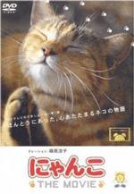
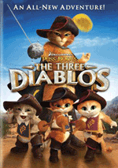

猫的报恩17岁的高中二年级生小春，她因为迟到而被批评，更重要的是，她暗恋的男生看到了这一幕。放学回家的途中，小春意外的救下了一只差点被卡车轧过的猫儿。更叫她吃惊的是，这只猫居然会站起来，并且会使用人类的礼节向她致谢，又神秘的消失在小春面前。这一夜，小春的家门前聚起了许多猫咪。在这个巨大的“猫”之方阵中，猫王乘坐着“猫车”出现了。猫王告诉小春，白天她所救下的小猫是猫国的王子，因此，猫国上下将视小春为恩人，并将对她有所报答…… |
 |
猫咪物语纪录片里有北海道农场的三兄妹，清晨时光或趴在牛背上休息，或小酌刚挤出的牛奶，惬意舒适；宫城县田代岛，爱猫的人们将这里变成猫的天堂；唐人街内，呼呼大睡的强朋，成为人见人爱的招财猫；下半身瘫痪的猫儿平藏坚强的行走在世上，感动无数的人；三岁的阿纯，与田径队的伙伴们度过难忘的青春岁月，茨城县牛久市，生活在殡仪馆的咪与老爷爷一起念经…… |
老师和迷路猫该片根据木附千晶的小说《迷路猫咪：地域猫与商店街再生物语》进行改编。故事以琦玉县岩槻市发生的猫咪失踪事件展开。尾形饰演的是妻子去世、独自一人生活的昔日校长森衣恭一。森衣与亡妻生前饲养的流浪猫相依为命，但森衣却不太喜欢猫，每天想方设法赶走它。可是有一天，这只猫再也没回家，心急如焚的森衣开始全力寻找，周围人听到猫咪失踪的消息，也纷纷开始了找猫行动…… |
 |
穿靴子的猫·萌猫三剑客在经过了一系列惊险刺激的大冒险过后，剑客靴猫踏上新的征程。这次他来到一片辽阔壮丽的荒原，当他正纵马驰骋之时，却被一群全副武装的士兵拦了下来。在验证身份之后，剑客靴猫被带进一座华丽庄严的王宫，并见到了亚历山德拉·贝拉冈巴公主。公主愁眉不展，面带忧伤，原来她王冠上的熔火之心红宝石被来自法兰西的盗贼耳语大盗偷走。在追捕耳语大盗的过程中，卫兵们捉到大盗的三个跟班——三只超萌看似天真无邪的幼猫。可是公主与卫兵却称他们为恶魔，公主拜托剑客靴猫从小猫口中问出耳语大盗的巢穴，并夺回宝石。剑客靴猫欣然应允，不过他却轻视了眼前这三只诡计多端的小猫…… |
加菲猫有一天，乔恩带加菲猫去见美丽的兽医莉丝，向她讨教管训猫的办法。莉丝出了一个很“毒辣”的招数，她给加菲猫喝下一种药物，当它表示反感时尾巴就会不停的摇摆，这事让加菲猫气愤不已。乔恩带回了一条叫欧迪的小狗，欧迪是只非常可爱的杂种狗，加菲猫顿时觉得自己失宠地位受到了威胁。为了讨好主人的欢心，加菲猫在暗地里与欧迪小狗比赛，可是他懒惰的性格反而越来越让主人感到厌恶了，这时，加菲猫将怨气都怪在了欧迪小狗的身上。某天晚上，欧迪真的被一个邋遢的训狗人拐走了，加菲猫觉得很内疚。在加菲猫的生活里，这还是他第一次开始感到要为别人负责任。想到这里，加菲猫丢掉了摇控器，离开电视走出家门，他偷偷溜出家，要把可怜的欧迪找回来…… |